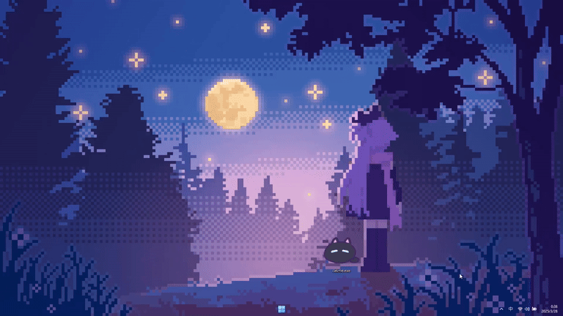

Hi~ 我的朋友！
关于我的名字
"Vladelaina" 是结合了我最喜欢的两部动漫女主角的名字——《86-不存在的战区-》中的 Vladilena Milizé 和《魔女之旅》中的 Elaina。
如果你还没看过这两部作品，真心推荐你去看看，剧情和角色都非常精彩，绝对值得一追！
接下来，就让我为你介绍一下 Catime 的使用指南吧～
开始使用
软件无需安装，首次双击打开的时候在顶部显示一个25分钟的置顶倒计时
简单
无需安装

小贴士
建议你先将 Catime 的托盘图标从隐藏区域拖到任务栏上，这样使用会更方便。

基本操作
Catime 的所有操作都通过点击任务栏图标完成：
左键
打开时间管理界面

右键
打开设置菜单

自定义功能
我的朋友，相信你已经迫不及待地想移动一下窗口的位置了吧？比如把它放到屏幕左下角。这个时候只需右键点击托盘图标，选择"编辑模式"。此时，窗口会变成亚克力背景，你就可以用鼠标拖拽来调整位置，滚轮调整大小。调整完毕后，鼠标在窗口上右键即可关闭编辑模式～

恭喜完成!
至此，恭喜🎉你已经掌握了Catime的核心内容，剩下的部分基本都是字面意思😉。